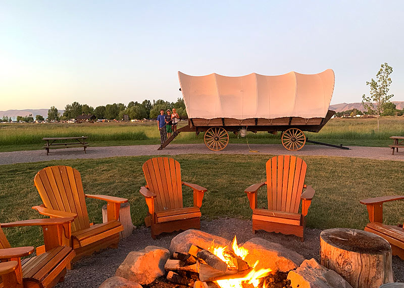
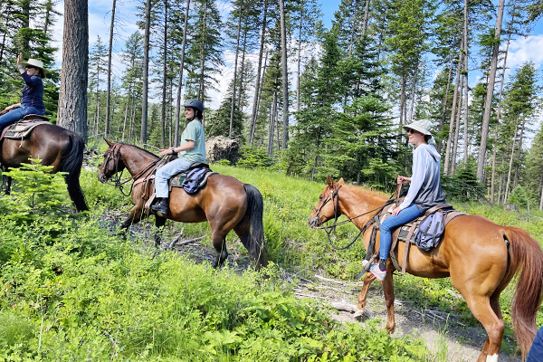

Take Part in Our Daily Activities


Take Part Some Of The Following
- Go on one of our daily horseback riding trips with our very experienced trainers
- Go for a hike on one of our many trails, make sure to pack plenty of water and know you limits
- Meet our many different animals, you can learn more about them in the animals tab of our website
- Nightly firepit singalong, every Friday we have live musical preformers
- Take a dip at our public pool, the area includes a hot tub and a massage tent
Hiking
There are two entrances to two different nature trails that leave our property. There is a beginers trail that is about 2 miles in length and There is an experts trail that is abotu 7 miles long that takes you past the lake. Before going on either trail you should be well prepared and hydrated the trails close after 7pm in the summer and 5pm in the winter. You can get more information by visiting our front desk.